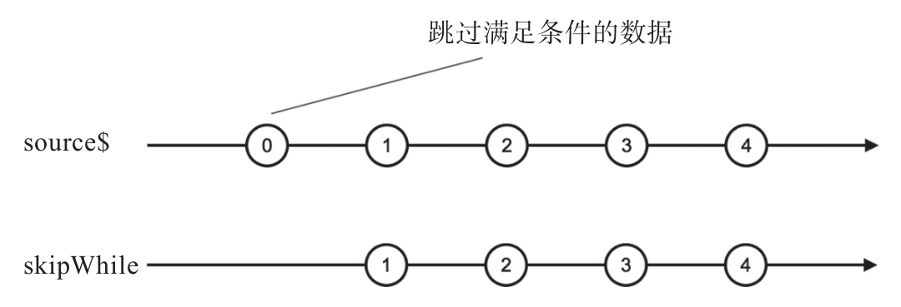

skip和take采用的是正好相反的两种过滤策略，和take一样，skip也有两个兄弟，分别是skipWhile和shipUntil。
如果能够理解takeWhile和takeUntil，也就容易理解skipWhile和skipUntil，这两组操作符是一一对应的关系。
下面是使用skipWhile的示例代码：
const source$ = Observable.interval(1000); const skipWhile$ = source$.skipWhile(value => value % 2 === 0);
其中，skipWhile的参数可以判断一个数据是否为偶数，所以skipWhile会跳过数据流前面的偶数数据，注意，只是跳过数据流前面的偶数数据，而不是跳过数据流中所有的偶数数据。对应的弹珠图如图7-9所示。

图7-9 skipWhile的弹珠图
可以看到，skipWhile会跳过第一个数据0，因为0是偶数，接下来，会把下一个数据1传给下游，再接下来，source$产生的其他偶数2、4都照常传递给下游，也就是说，skipWhile只会跳过数据流前面的偶数数据。只要某个数据让判定函数返回false，之后skipWhile就不做跳过的动作，所有的上游数据都转手给下游。